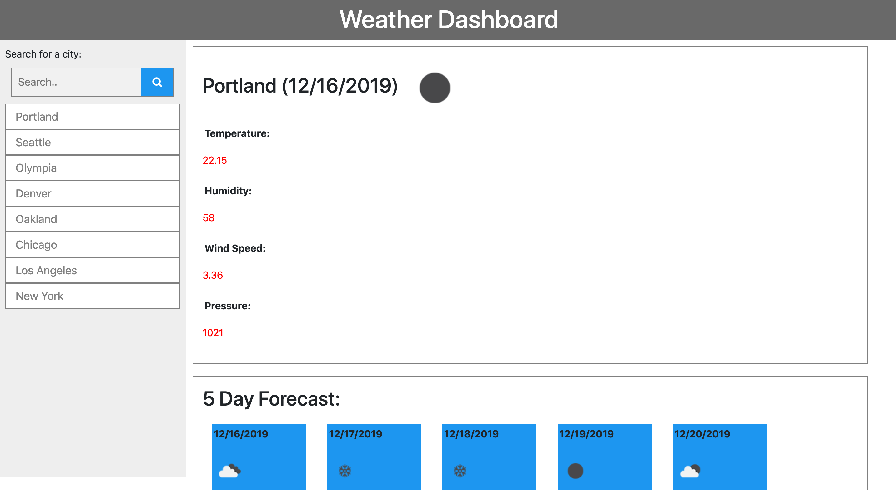
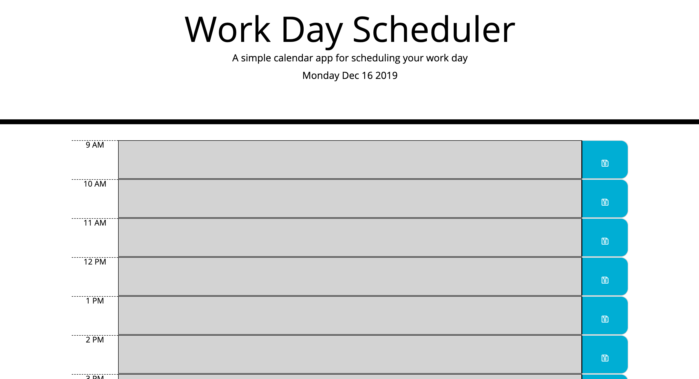

Here are a few projects I've been working on in Coding Bootcamp
Latest Projects:
-
Gluten-Tootin!
This is an app for searching for gluten-free recipes and restaurants. We developed this app for users to search for gluten-free recipes, and also provide a list of restaurants with similar gluten-free options. As a person with certain dieting restrictions, I want to be able to search for food that fits into my diet plan, so that I won’t eat food that is potentially harmful.

Link to Github Repository
-
Weather App
Functioning weather application. This is a weather dashboard application with search functionality to find current weather conditions and the future weather outlook for multiple cities. As a traveler I want to see the weather outlook for multiple cities so that I can plan a trip accordingly
Link to Github Repository
-
Day Planner
This is a functional Day Planner application. The application displays timeblocks for standard business hours (9 a.m. to 5 p.m.). Each timeblock contains an input field and save button. Clicking a timeblock's "Save" button stores the input text in local storage, allowing the text to persist when the application is refreshed. The current day is displayed at the top of the calendar. Each timeblock is color coded to indicate whether it is in a past, present, or future hour.
Link to Github Repository